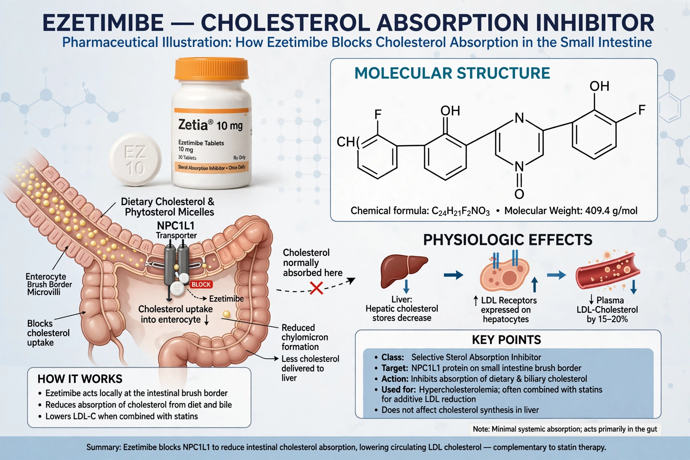

Ezetimibe is a medication used to treat high blood cholesterol and certain other lipid abnormalities. It inhibits the absorption of cholesterol from the small intestine. It is sold under brand names including Zetia and, combined with simvastatin, Vytorin.

EzetimibeEzetimibe blocks the Niemann-Pick C1-Like 1 (NPC1L1) protein in the brush border of the small intestine, reducing delivery of intestinal cholesterol to the liver, upregulating LDL receptors and lowering blood LDL cholesterol by roughly 15–20% alone.
It is used alone or with statins in primary hypercholesterolaemia and familial hypercholesterolaemia, and after acute coronary syndrome. The IMPROVE-IT trial showed a modest reduction in cardiovascular events when added to simvastatin. It is also used in sitosterolaemia.
Common effects include headache, diarrhoea and upper respiratory symptoms; muscle and liver effects are more likely in combination with statins. See also PCSK9 inhibitor and Cardiovascular disease.